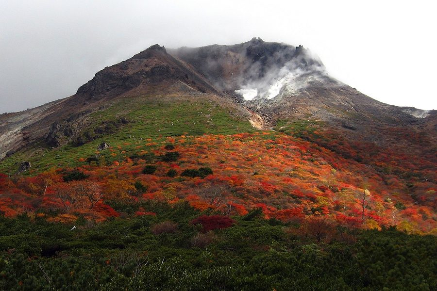
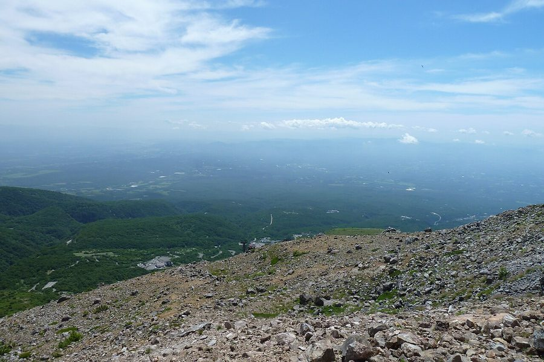

栃木県那須郡那須町の日帰り温泉・銭湯・サウナ（50件）
寄り道スポット検索アプリ「ヨッテコ」の収録データから、栃木県那須郡那須町の日帰り温泉・銭湯・サウナを営業時間・料金つきで一覧にしました（2026年8月時点）。
最も安いのははなやホテル 小鹿の湯（500円）。最も遅くまで入れるのは那須高原の宿 山水閣（翌9:30まで）。朝風呂なら那須湯本温泉 河原の湯（5:00開店）。
栃木県那須郡那須町はどんなまち？
数字で見る🔍栃木県那須郡那須町
23,290人
人口（住民基本台帳・2026年1月1日）
372.34km²
面積
9.5℃
年平均気温（平年値）
まちの横顔


- 地形と気候: 北西部に茶臼岳や朝日岳、白笹山などが聳え、その麓には那須高原が広がります。町の南西を那珂川、北東部を黒川が流れ、東側には八溝山地があります。気候は西岸海洋性気候（Cfb）に属し、豪雪地帯に指定されるほど降雪量が多く、年平均気温は9.5℃、1月から2月は日平均気温が氷点下になります。
- 観光: 北西部の那須高原は大リゾート地として知られ、那須御用邸もあることからロイヤルリゾートとしても知られます。那須岳や殺生石、那須平成の森、駒止の滝、八幡のツツジ、蓑沢の彼岸花などがあります。
寄り道充実度（全国偏差値）
偏差値・順位は、ヨッテコ収録データ（2026年8月時点・26,033件）を市区町村別に集計した施設数の全国分布（1,728市区町村）から毎回算出しています。カードを押すとカテゴリ別の分析に切り替わります。
日帰り温泉から見た栃木県那須郡那須町
町内の日帰り温泉は50件、全国23位タイ（上位1.3%）。——湯の選択肢は、全国の上位5%に入る。
50件
日帰り入浴施設（全国23位タイ・上位1.3%）
83偏差値
温泉充実度
1,000円
入浴料の中央値（判明29件・全国650円）
- 54%の店に露天風呂があります。全国水準は46%です。北西部に茶臼岳や朝日岳、白笹山などが聳え、その麓に那須高原が広がる町。54%という数字が、外で湯に浸かるまちであることを示しています。
- 天然温泉を使う店は84%、全国水準（67%）の1.3倍。那須高原と那須御用邸があり、ロイヤルリゾートとしても知られる町。沸かし湯ではなく源泉が前提で、温泉そのものがまちの資源になっています。
- サウナがある店は32%で、全国水準（52%）を下回ります。サウナで整えるより、湯そのものに浸かりに行くまちです。
- 夜遅くまで開いている店は20%にとどまります（全国40%）。夜の選択肢は限られるので、閉店時刻は先に見ておきたいところです。
- 入浴料の中央値は1,000円でした（判明29件）。全国の650円と比べて54%高い水準です。設備や湯の質を含めた、この土地の相場ということになります。
出典: 施設データ=ヨッテコ収録データ（26,033件・2026年8月時点）。偏差値・全国順位・全国水準は全1,728市区町村の分布から毎回算出。 / 人口=総務省「住民基本台帳に基づく人口、人口動態及び世帯数」（2026年1月1日現在） / 面積=国土地理院「全国都道府県市区町村別面積調」（2026年4月1日時点） / 年平均気温=日本語版Wikipedia「那須町」（https://ja.wikipedia.org/wiki/那須町、2026年8月21日取得） / まちの解説=同記事より作成（CC BY-SA 4.0） / 写真=Wikimedia Commons（各キャプションに作者・ライセンスを記載）
曜日別の営業施設数
| 月 | 火 | 水 | 木 | 金 | 土 | 日 |
|---|---|---|---|---|---|---|
| 48 | 47 | 44 | 45 | 47 | 46 | 46 |
水曜日が最も休みが多く（各6件が定休）、年中無休は40件です。※営業時間データのある50件で集計
入浴料金の分布（大人）
| 500円以下 | 5件 | |
| 501〜800円 | 7件 | |
| 801〜1,200円 | 8件 | |
| 1,201円以上 | 9件 |
料金が確認できた29件で集計。
施設一覧
| 施設 | 営業時間 | 料金（大人） |
|---|---|---|
| Off Line Sauna NASU 農園ステイ那須 サウナ 那須の自然に囲まれたファームステイ施設。貸切バレルサウナとウッドデッキBBQ、ワーケーションに対応した個室を組み合わせた… | 13:30〜17:30（水休） | — |
| Quiet Storm Nasu サウナ | 07:00〜22:00 | — |
| TOWAピュアコテージ 天然温泉露天風呂 | 06:00〜10:00 | 650円 |
| お宿 ひがしやま 別邸 蜉蝣の月 天然温泉 | 11:00〜15:00 | 4,400円 |
| かけ流しの宿 中藤屋旅館 天然温泉 約1300年前に発見された「鹿の湯」源泉かけ流しの硫黄泉。那須湯本を代表する名湯。 | 11:00〜15:00 | 600円 |
| こころのおやど 自在荘 天然温泉露天風呂サウナ 那須御用邸にも引かれている地蔵の湯を使用した日帰り温泉施設。露天風呂にはジャグジーや半身浴も完備。 | 14:00〜18:00 | 1,000円 |
| こんばいろの湯 天然温泉 | 09:30〜17:00 | — |
| はなやホテル 小鹿の湯 天然温泉露天風呂 那須湯本の温泉施設。硫黄泉が特徴です。 | 09:00〜21:00 | 500円 |
| ほったらかしの宿 ゆうふり那須高雄温泉ロッジ 天然温泉露天風呂 | 13:00〜22:00 ※曜日により異なる | 1,000円 |
| ほっとするお宿 石川荘 天然温泉 源泉掛け流しの単純硫黄泉を24時間堪能。自然融合器で人間本来の体のリズムを整える効果が期待できる温泉設備です。 | 14:00〜20:00 | — |
| ウェルネスの森 那須 天然温泉露天風呂 | 12:00〜20:00 | 2,200円 |
| グランドホテル愛寿 天然温泉露天風呂 那須温泉郷の大丸温泉を引き入れた美人の湯として知られるホテル。川沿いの露天風呂が特徴。 | 15:00〜24:00 | — |
| グランドメルキュール 那須高原リゾート＆スパ 天然温泉露天風呂サウナ 栃木県那須高原のリゾートホテル。1,300年以上の歴史を持つ那須の湯で、露天岩風呂と開放的な大浴場で癒せます。 | 15:00〜21:00 | 1,500円 |
| フィンランドの森 joki sauna（ヨキサウナ） サウナ 那須の自然に囲まれた複合施設内の川を眺めるサウナ。フィンランド語で『川』を意味するジョキの名を冠し、森林浴と川のせせらぎ… | 09:00〜17:00 | 4,400円 |
| ブランヴェール那須 天然温泉露天風呂サウナ クアハウス併設 | 13:00〜20:00 | 1,000円 |
| プライベートサウナラウンジ THE PINE（ザパイン） サウナ 那須スポーツガーデン内のプライベートサウナラウンジ。自家製薪ストーブとターボ吸気システムで110℃の本格サウナ。那須高原… | 10:00〜19:00（水休） | — |
| ホテル フロラシオン那須 天然温泉露天風呂サウナ ホテルフロラシオン那須 | 14:00〜20:00 | 1,500円 |
| ホテルエピナール那須 天然温泉露天風呂サウナ | 12:00〜22:00 | 1,500円 |
| ホテルグリーンパール那須 天然温泉露天風呂 乳白色の源泉かけ流し硫黄泉。露天風呂と貸切風呂で、那須高原の大自然に包まれながら開湯1380年の名湯を楽しめます。 | 13:30〜18:00（土・日休） | — |
| ホテルサンバレー那須 アクアヴィーナス 天然温泉露天風呂サウナ 那須高原の広大な敷地に立つホテル内の温泉施設。硫黄泉と複数の温泉成分を含む大浴場を備え、サウナや岩盤浴などの設備が充実し… | 10:00〜21:00 | 1,000円 |
| リゾートホテル ラフォーレ那須 天然温泉サウナ | 14:00〜20:00 | — |
| 北温泉旅館 天然温泉露天風呂 | 08:30〜17:30 | 700円 |
| 喜久屋旅館 天然温泉 那須温泉の元湯・鹿の湯を源泉とする白くにごった天然かけ流しの湯。高原の風と小鳥のさえずりに癒される寛ぎ空間です。 | 10:30〜18:30 | 500円 |
| 四季倶楽部 ベルフォーレ那須 | 16:00〜23:00 | 1,100円 |
| 大丸温泉旅館 天然温泉露天風呂 奥那須の秘湯として知られ、複数の源泉を持つ高級温泉旅館です。 | 11:30〜15:00 | 1,300円 |
| 旅館ニューおおたか 天然温泉露天風呂 那須最高標高1300mの露天風呂。茶臼岳を望む絶景の温泉で星空が楽しめる。 | 10:00〜14:30 | 700円 |
| 東山道那須温泉 天然温泉露天風呂 源泉かけ流しのアルカリ性単純温泉。無色・透明・無臭で肌に優しくなめらか。露天風呂から那須連山の絶景が見渡せる。 | 11:00〜18:00 | 500円 |
| 松川屋 那須高原ホテル 天然温泉露天風呂 開湯1380年以上の「鹿の湯」の源泉かけ流し。複数源泉を引湯し男女で異なる泉質を楽しめる。 | 12:00〜20:50（木休） | 1,000円 |
| 森deワーケ なすっぽ サウナ 森deワーケなすっぽはワーケーション施設で、貸切バレルサウナとロウリュ、ウッドデッキでのBBQ、個室またはシャワー室を組… | 10:00〜15:00 | 3,000円 |
| 温泉コテージ桜の丘 さくらの湯 天然温泉露天風呂 | 10:00〜20:00（木休） | 700円 |
| 源泉 那須山 令和の湯 天然温泉露天風呂サウナ お菓子の城那須ハートランド内の日帰り温泉。2021年より新源泉使用。檜の大浴場と露天風呂を備え、那須の自然に囲まれた10… | 10:00〜22:00 ※曜日により異なる | 890円 |
| 白いにごり湯 旅館山快 天然温泉 | 10:30〜15:00 | 600円 |
| 眺望ペンション アパッチ 天然温泉露天風呂 那須高原のペンション。3種類の無料貸切風呂（露天風呂、気泡風呂、信楽焼陶器風呂）で温泉を満喫。天窓・吹き抜けのロフト付き… | 10:30〜17:00 | — |
| 芦野温泉ホテル 天然温泉露天風呂サウナ | 08:00〜21:00 | 1,500円 |
| 那須ユートピア アウトドア＆サウナ サウナ 那須高原のプライベートサウナ施設。コンクリート製サウナCUBERU、薪ストーブサウナRekkka、ヴィラテラス付きプライ… | 10:00〜19:30 | — |
| 那須天然温泉・サウナ 弓乃湯 天然温泉サウナ | 08:00〜19:30 | — |
| 那須温泉 あさか荘 天然温泉 | 08:00〜20:00 | 500円 |
| 那須温泉 ガストホフ那須花 天然温泉露天風呂 | 09:00〜18:00 | — |
| 那須温泉 若喜旅館 天然温泉露天風呂 | 14:00〜17:00 | — |
| 那須温泉旅館 清水屋 天然温泉露天風呂 | 10:30〜19:00 | — |
| 那須湯本温泉 河原の湯 天然温泉 | 05:00〜23:00 | — |
| 那須湯本温泉 滝の湯 天然温泉 | 05:00〜23:00 | — |
| 那須湯本温泉 鹿の湯 天然温泉 千三百年続く那須湯本温泉の鹿の湯。複数温度の浴槽を使用した特殊な入浴方法で知られている。 | 08:00〜18:00 | 500円 |
| 那須陽光ホテル 天然温泉 那須高原のホテル。フッ素イオン含有の冷鉱泉が特徴で、美肌効果が期待できます。 | 15:00〜18:00（土・日休） | 1,200円 |
| 那須高原 金ちゃん温泉 天然温泉露天風呂 那須高原の天然温泉施設。地下1,400メートルからの源泉で、殺菌効果が高く肌に優しい特徴があります。 | 11:30〜16:00（水・木休） | 800円 |
| 那須高原の宿 山水閣 天然温泉 那須高原の大丸温泉を引き入れた宿泊施設で、24時間利用可能な大浴場と貸切風呂を備える。 | 13:00〜33:30 | — |
| 金乃湯 | 09:00〜18:00 | — |
| 雲海閣 天然温泉 那須温泉郷唯一の素泊まり専門湯治宿。100％かけ流しのにごり湯で疲れを癒す。 | 09:00〜20:00 | — |
| 露天付プライベートヴィラ ローズウッド 天然温泉露天風呂 | 20:00〜24:00 | — |
| 高原の指定席 オーベルジュ ザ・ヴィンテージビュー 天然温泉露天風呂 那須高原の眺望が素晴らしい高級ペンション。展望貸切風呂が無料。テラス付きスイートルームから那須連山を一望。シェフ40年の… | 16:00〜17:00 | — |
現在地から近い順に探すなら、地図アプリ「ヨッテコ」
全国26,000件の温泉・道の駅・アイスのお店を登録不要で検索。到着時刻に営業しているかの目安も表示します。